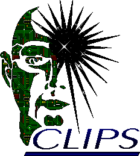

Los sistemas expertos resuelven problemas que normalmente son solucionados por expertos humanos.
Un sistema experto se compone de una base de conocimiento del dominio en cuestión, mecanismos de razonamiento para aplicar conocimiento a los problemas que se proponen, mecanismos para explicar a los usuarios el razonamiento utilizado a la hora de ofrecer una respuesta y mecanismos de aprendizaje y adquisición de nuevo conocimiento.
Para crear una base de conocimiento es necesario contar con al menos un experto humano del dominio en cuestión. Se puede adquirir su conocimiento a partir de entrevistas ó mediante interfaces amigables para que lo introduzca. Pero también es muy importante una adecuada modelización de su conocimiento.
Los mecanismos de representación del conocimiento que se pueden encontrar son: lógica, redes, marcos y reglas. No obstante, lo más utilizado es una adecuada combinación de marcos y reglas.
Es posible representar el conocimiento mediante hechos o instancias y reglas ó algún otro mecanismo para inferir nuevos hechos. Pero deberemos plantearnos si a partir de los hechos vamos a ir aplicando reglas (encadenamiento hacia adelante), ó si por el contrario nos interesa responder a una cuestión concreta (ej: ¿ tengo gripe?) e ir satisfaciendo subobjetivos hasta llegar a hechos que demuestren la veracidad ó falsedad de la frase (encadenamiento hacia atrás). También es conveniente plantear: qué reglas ejecutar antes, cuáles están listas para ser ejecutadas, si ejecutar las reglas cuyos antecedentes se actualizaron recientemente, ó si ejecutar primero reglas específicas. Todos estos mecanismos de control del razonamiento pueden ser tenidos en cuenta a la hora de construir nuestro sistema experto.
El software libre nos proporciona buenas herramientas para el desarrollo de sistemas expertos. Algunas de ellas son: clips y babylon.
Para ilustrar este apartado recomiendo instalar clips que está empaquetado para un buen número de sistemas. En debian basta con hacer apt-get install xclips clips clips-doc. xclips es un interfaz gráfico para utilizar clips, recomiendo su uso, para saciar la curiosidad del cacharreo. Desde línea de comandos podemos ejecutar lo siguiente:
Ejemplo 2. Ejemplo de uso de clips
[darroyo@turing:/usr/share/doc/clips-doc/examples]$ clips
CLIPS> (load "auto.clp")
Defining deffunction: ask-question
Defining deffunction: yes-or-no-p
Defining defrule: normal-engine-state-conclusions +j
...
CLIPS> (reset)
CLIPS> (run)
The Engine Diagnosis Expert System
Does the engine start (yes/no)?
|
De este modo, se prueba un ejemplo de sistema experto cuyo objetivo es solucionar averías con el coche. El sistema va haciendo preguntas acerca de los síntomas que presenta el coche y finalmente otorga un diagnóstico. Os recomiendo que echéis un vistazo al fichero auto.clp.
Espero que este apartado haya servido para entender qué una máquina puede modelar el conocimiento de un experto en, al menos, un dominio limitado y que esto es útil para recibir asesoría ó consejos para las que en condiciones normales precisaríamos de un experto humano.

logo de clips